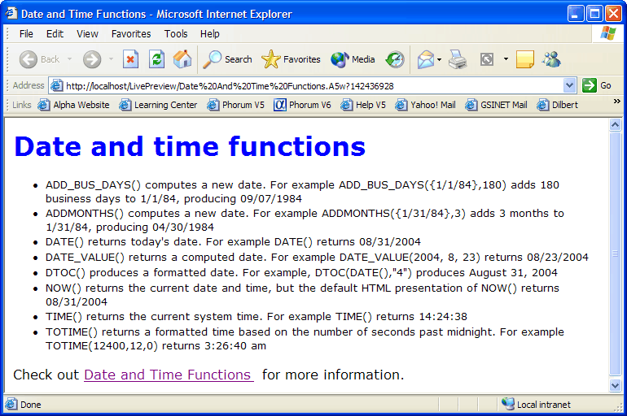

Time and Date Functions
Create a new A5W page with the following content.
<%a5 dim ultext as C = "Four score and seven years ago" dim extraspaces as C = " Four score " dim allcaps as C = "SEVEN YEARS AGO" %> <html> <head> <meta name="generator" content="Alpha Five HTML Editor"> <title>Date and Time Functions</title> </head> <body> <br> <h1><font face=Verdana color=#0000ff>Date and time functions</font></h1> <font face=Verdana size=2><ul> <%a5 ? "<li>ADD_BUS_DAYS()computes a new date. For example ADD_BUS_DAYS({1/1/84},180) adds 180 business days to 1/1/84, producing " + ADD_BUS_DAYS({1/1/84},180) + "<br>" ? "<li>ADDMONTHS()computes a new date. For example ADDMONTHS({1/31/84},3) adds 3 months to 1/31/84, producing " + ADDMONTHS({1/31/84},3) + "<br>" ? "<li>DATE()returns today's date. For example DATE()returns " + DATE()+ "<br>" ? "<li>DATE_VALUE()returns a computed date. For example DATE_VALUE(2004, 8, 23) returns " + DATE_VALUE(2004, 8, 23) + "<br>" ? "<li>DTOC()produces a formatted date. For example, DTOC(DATE(),\"4\") produces " + DTOC(DATE(),"4") + "<br>" ? "<li>NOW()returns the current date and time, but the default HTML presentation of NOW()returns " + NOW()+ "<br>" ? "<li>TIME()returns the current system time. For example TIME()returns " + TIME()+ "<br>" ? "<li>TOTIME()returns a formatted time based on the number of seconds past midnight. For example TOTIME(12400,12,0) returns " + TOTIME(12400,12,0) + "<br>" %> </ul></font> <font face=Verdana>Check out <a href="http://support.alphasoftware.com/alphafivehelp/Xbasic/Date_and_Time_Functions.htm"> <font face=Verdana>Date and Time Functions</a> for more information.</font> </body> </html> |
Note in this example.
You must surround a date value expressed in numbers with "{}".
HTML displays a Time value (which contains both date and time) as a date only.
There are multiple built-in date and time formats. The TOTIME(12400,12,0) function uses format 12. The DTOC(DATE(),"4") function uses format "4".
Alpha Anywhere has more than 50 character manipulation for computing, formatting, and displaying date and time values.
Click File > Save As to save your page as "Date and Time Functions".
Click
 to run the page in Live Preview. The result should look like this.
to run the page in Live Preview. The result should look like this.

Function | Description |
Adds or subtracts days to a date to return a new date. | |
Adds or subtracts months from a date to return a new date. | |
Returns today's date. | |
Returns a date based on year, month, and day numbers. | |
Formats a date value. | |
NOW() | Returns the current date and time. |
Returns the current system time. | |
Returns a time value based on the number of seconds past midnight. |
See Also